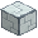
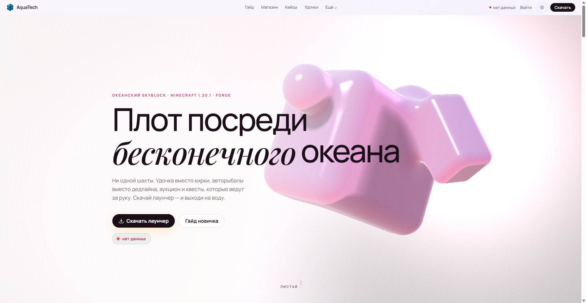
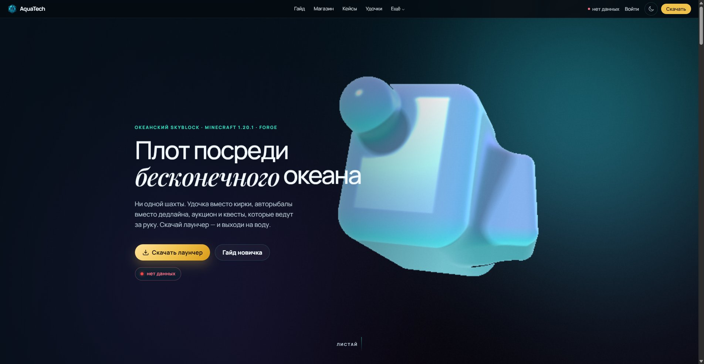

Шаг 1. Плот и первая удочка
Вход в один клик через лаунчер, без ввода IP. Открываешь меню F4, берёшь бамбуковую удочку — и первый заброс готов.
Океанский Skyblock · Minecraft 1.20.1 · Forge
Ни одной шахты. Удочка вместо кирки, авторыбалы вместо дедлайна, аукцион и квесты, которые ведут за руку. Скачай лаунчер — и выходи на воду.
Как это устроено
Три сцены, которые объясняют весь сервер: как ты попадаешь на плот, как добываешь ресурс и почему дальше за тебя всё делают машины.
01 / 03
Вход в один клик через лаунчер, без ввода IP. Открываешь меню F4, берёшь бамбуковую удочку — и первый заброс готов.

Каждая следующая удочка крафтится из предыдущей и её же улова: T1 тянет булыжник, T7 — самоцветы, Альфа — иридий и звезду Незера.

Авторыболов MK-2 ловит сам, экскаватор грызёт дно, синтезатор и центрифуга перерабатывают улов. Гидростанция не останавливается, когда ты выходишь.
Топ рыболовов, спрос у Кота, свежие лоты и морские события — всё обновляется само.
Загрузка лидеров рыболовства…
Загрузка суточного спроса…
Загрузка рынка…
Окно ловли 20 мин каждые 3 часа с джекпотом до 2500 монет.
Грозовой фронт над океаном повышает редкий улов на 65%.
Регистрация, лаунчер, плот. Дальше всё объяснит меню F4.
Ник, скин, статистика улова и баланс. Прогресс не потеряется при переезде на другой компьютер.
Forge, моды и квесты приедут сами. Искать сборку по сайтам не придётся.
Вход в один клик. Открой меню F4, возьми бамбуковую удочку и забрось.
Ни одной шахты: ресурсы приходят с крючка, а дальше их тянут машины.
Каждая следующая удочка ловит руды предыдущего пула — от бамбука до Альфы.
Бамбуковая удочка тянет булыжник и медь, Альфа — иридий, осмиридий и звезду Незера. Каждая следующая крафтится из предыдущей и её же улова.
Авторыболов ловит сам, океанический экскаватор грызёт дно, синтезатор и центрифуга перерабатывают улов. Гидростанция не останавливается, когда ты выходишь из игры.
Пар, электричество, ботания, AE2, Avaritia: квесты объясняют каждый шаг и платят за него. Застрять сложно — подсказка всегда в книге.
Оформление


Introducing
Новая главная: кинематографичный WebGL-фон, живой дашборд сервера и редакционная вёрстка вместо ленты одинаковых карточек. Переключатель темы остался, но теперь он часть композиции, а не гаджет в шапке.
Патчи, события и изменения экономики — коротко и по делу.
Загрузка последних новостей…